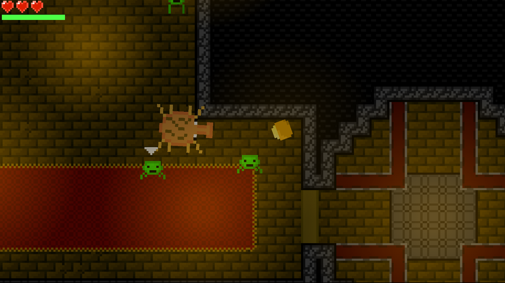
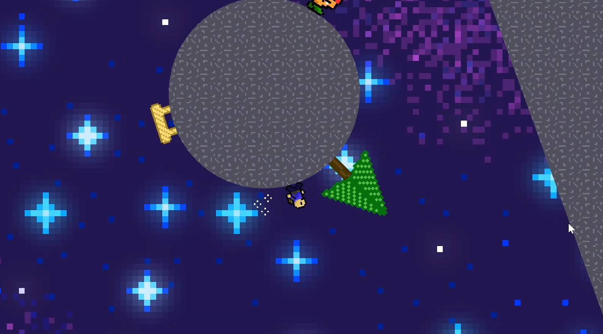
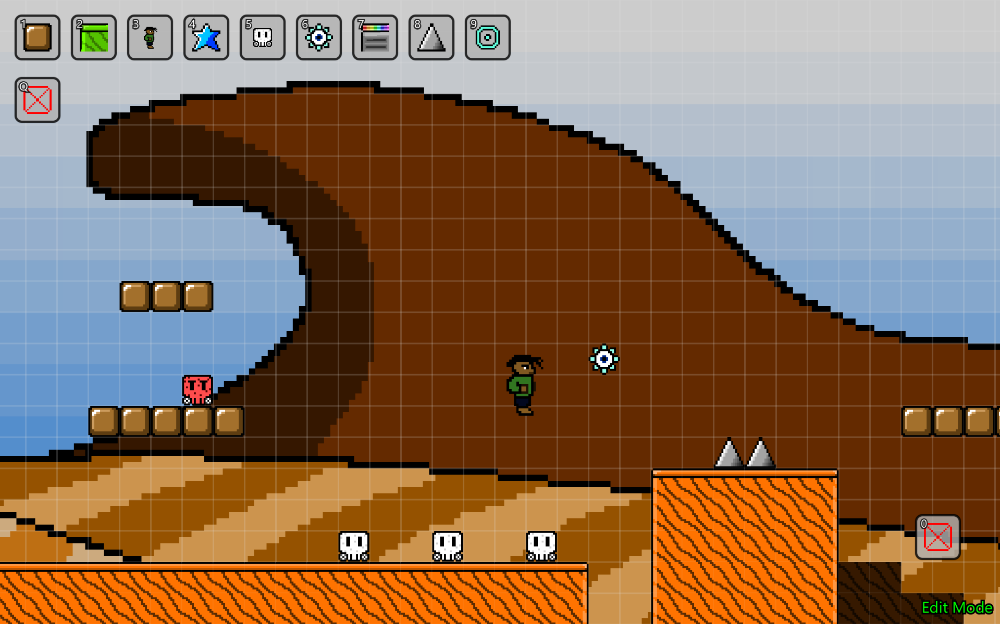
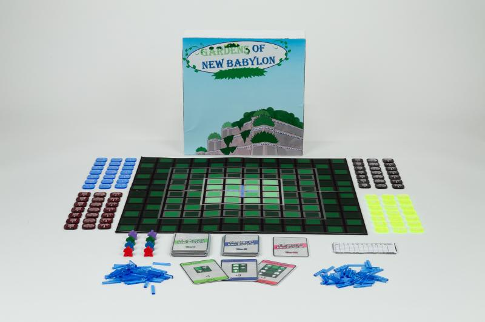
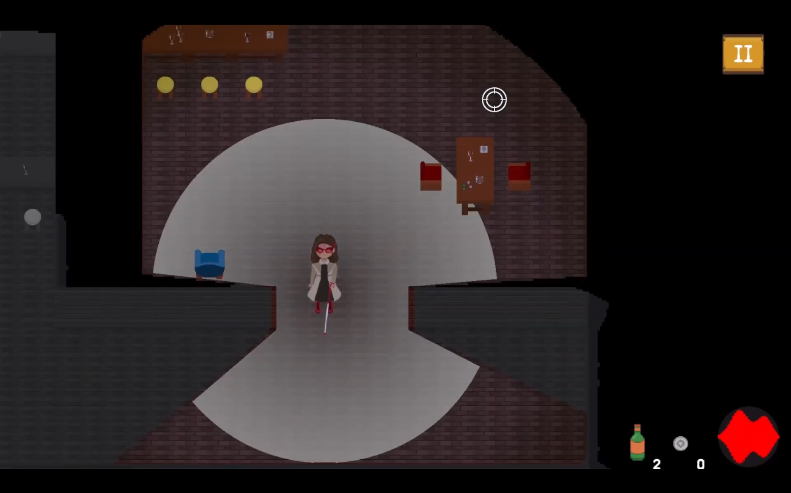
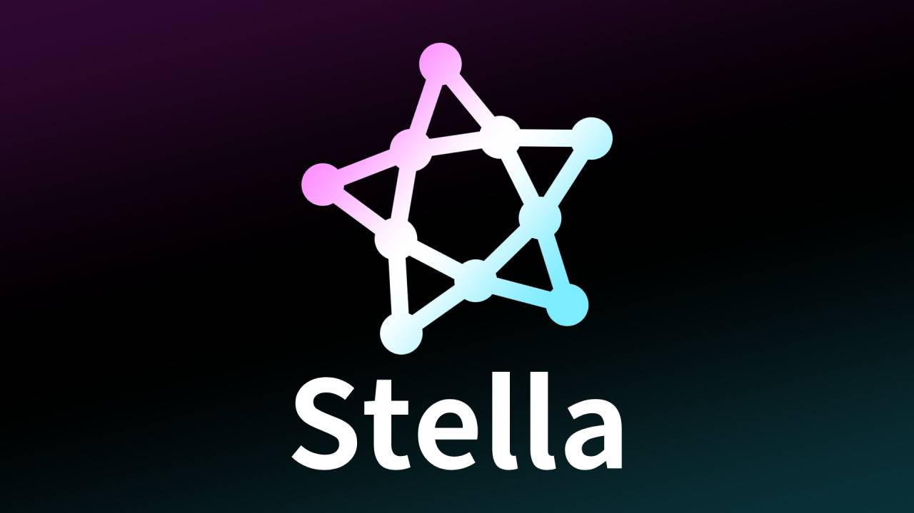

Quick Whips
Apr, 2022 -- Jun, 2022

Apr, 2022 -- Jun, 2022

Built in Construct 3, which uses visual scripting structured similarly to JavaScript, I learned the engine's ins and outs by creating a range of small systems and tests before starting this project during my sophomore year of high school.
Before Quick Whips, I already enjoyed math and programming. I made simple projects in Scratch and Java, and taught myself calculus, trigonometry, and basic discrete math concepts when I was younger.
I consider Quick Whips my first major project. Construct 3 is a real game engine used in shipped games. I spent a lot of time researching how it works and asking questions in the forums and Discord server to gain a strong understanding of the engine.
Sep, 2022 -- Nov, 2022

Breath of the Galaxies is a 2D platformer inspired by the physics and gravity mechanics of Super Mario Galaxy, developed in Construct 3. I designed and programmed the entire game solo during my junior year of high school, focusing on smooth physics and responsive controls. Development slowed toward the end due to the engine's limitations, but the project was a major step in learning how to bring ambitious ideas to life within constraints.
Nov, 2024 -- Dec, 2024

Super Short Bros. is a tile-scrolling 2D platformer inspired by Super Mario Bros. 3 and Super Mario Maker, developed in JavaFX. I built it as my final project for Computer Science 2 to demonstrate my understanding of JavaFX, choosing to challenge myself with a full platformer rather than a typical GUI-based application. The game includes player movement, collisions, enemies, level saving/loading, and tile-scrolling, all programmed from scratch.
v0.4.6 was the version I turned in for my university class (Dec, 2024). Since then, I continue to update the project, advancing my skills in Java and game engine development.
Apr, 2025 -- May, 2025

A strategic board game developed as the final project for my Intro to Game Design and Development course. Gardens of New Babylon focuses on forming patterns by managing resources and strategically moving workers, set in a world inspired by the Hanging Gardens. I took on the Designer role, leading the core mechanics and managing the team's workflow. The project involved iterative playtesting, mechanic balancing, and creating a polished, playable prototype.
The game won "Most Innovative Mechanics" at the Stour Game Expo (SGX) Spring 2025.
Sep, 2025 -- Dec, 2025

Led and managed a team of 9 students (7 programmers and 2 artists) using Unity and GitHub for version control. The original concept and design was not my first choice. Nonetheless, I handled the technical work and ensured the game ran smoothly while staying glitch-free. My main focuses were programming the Enemy AI, raycasting for better lighting and vision, and coaching other programmers based on knowledge and experiences gained through prior game development projects.
Through this I improved my leadership, problem-solving, and team management skills on a fast-paced student project. I had to quickly learn Unity, Git, and GitHub to assist the team.
Dec, 2025 -- Present

Stella Game Engine is a private general-purpose 2D game engine programmed in C++ with OpenGL libraries. So far, I've programmed rigid bodies that feature realistic circular and rectangular collisions for both dynamic and static bodies, custom shaders, and a customizable camera.
I plan to use this engine for various games in the future.
More to come!